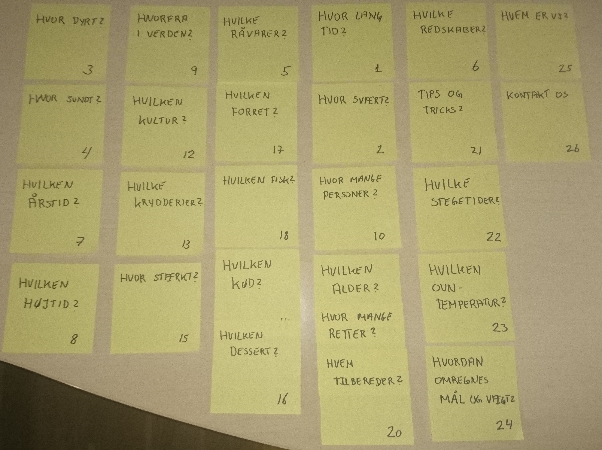
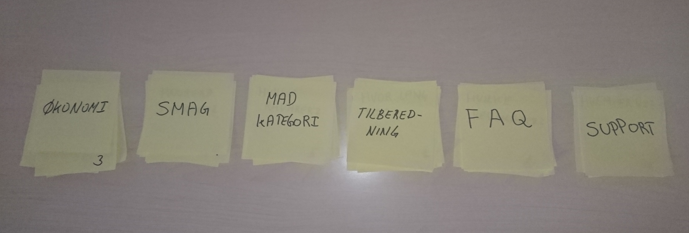
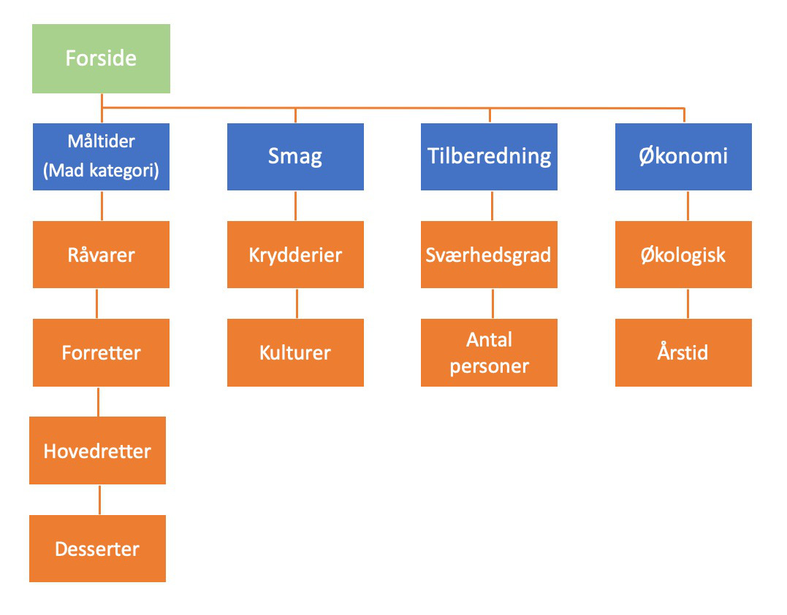
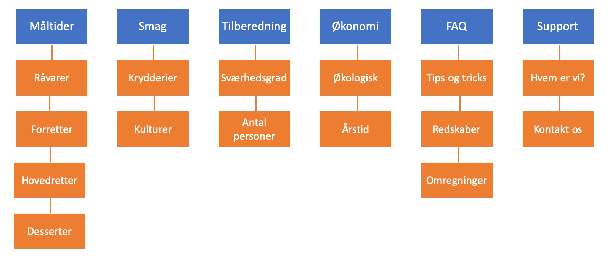

Opgaver for uge 9
I denne uge skal du udvikle et IA (informationsarkitektur) til en online kogebog med "al viden" om mad, måltider og hvordan de kan laves i køkkentet. Tænk kreativt!
Sørg for at få det uploadet til din portfolio på en side som du kalder IA, hvor du også dokumenterer hvilken IA struktur du finder passende, jfr. pkt. 5
Jeg har som det første i denne opgave, startet med at lave et excel ark, hvori jeg skrev de kategorier/emner, jeg kunne komme i tanke om.
Efterfølgende skrev jeg hvert enkelt emne på en post-it, som også fik et unikt nummer.
Da mine post-it's var klar, lavede jeg en kortsorteringsøvelse. Her var jeg igennem flere iterationer, inden jeg fandt en løsning på min gruppering. Resultatet er vist i figuren nedenfor og kan ses i stort format ved klik her
Hver enkel gruppe blev efterfølgende navngivet og resultatet er vist i figuren nedenfor og kan ses i stort format ved klik her
Jeg har lavet en abstrakt IA struktur, som viser de emner jeg mener hører til i en menu struktur. Det er ikke alle emner der er med, da nogle vil blive placeret i sidefoden på websitet. Endvidere har jeg omdøbt de enkelte emner.
Jeg har i mit sitemap lavet den struktur som jeg mener websitet skal have.
